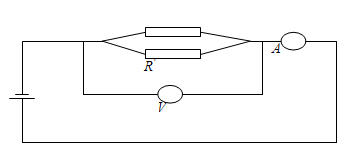

Жұмыстың мақсаты: 1. Қарапайым электр тізбегін жинауға дағдылану.
2. Амперметр және вольтметр әдісі бойынша өткізгіштің кедергісін экспериментальды түрде анықтау.
3. Кирхгоф ережелерін тексеру.
Қажетті құрал-жабдықтар: Ток көзі ВС-24,З-амперметр,
3-вольтметр, 3-кедергі ,жалғағыш сымдар.
ҚЫСҚАША ТЕОРИЯСЫ
Металл өткізгіштерде токтың үлкен (кең) диапозонында, ток пен кернеудің арасында мынандай қарапайым байланыс байқалады.
U = I · R
Мұндай байланыс өткізгіштің вольт-амперлік характеристикасы (тәуелділігі) деп аталады. Мұндағы өткізгіштің кедергісі, ол өткізгіштердің геометриялық формасына және өткізгіштің материалына байланысты шама. Бұл сипаттаманы график түрінде көрсетуге болады.
1-тапсырма. Екі өткізгіштің кедергісін анықтау
Ол үшін 1-суреттегі схеманы жинайсыздар.
а) Ток көзінен шығатын шығатын (алынатын) кернеудің шамасынөзгерте отырып, ток пен кернеудің бірнеше мәнін анықтаймыз.
Мәліметтерді 1-таблицаға енгізіңіздер
R1,R2,R3,....,Rnмәндерін табу керек. Кедергілердің орта Ropмәнін анықтаймыз.
б) Осы жұмысты (1-схема бойынша) басқа R`кедергісіне қайталаңыздар.
R1`,R2`,R3`,....,Rn`мәндерін табыңыздар.
в) R1 және R` кедергілерін тізбектей жалғап, (2-суреттегі схема) олардың кедергілерінің шамасын сол әдіспен анықтаңыздар.
формуласынан алынған шамалармен салыстырыңыздар.
Мәліметтерді 2-кестеге енгізіңіздер
г) Өткізгіштерді R1мен R`параллель қосқан кездегі кедергінің шамасын анықтаңыздар. (3-суреттегі схеманы жинаңыздар).
Салыстырмалы қателігін есептеңіздер.

2 - тапсырма.Кирхгоф ережелерін тексеру
Кирхгофтың 1- ережесі: Токтардың алгебралық қосындысы түйінде нольге тең.Σ
Ii=0
Кирхгофтың 2- ережесі: Кез-келген тұйық контур үшін ток күші мен кедергінің алгебралық көбейтіндісі, ЭҚК-нің алгебралық қосындысына тең.
1. Берілген схеманы таңдау. Түйін мен тұйық контурды таңдау.
2. Приборлардың орналасуын көрсету.
3. Керекті өлшеулер жүргізу және бағалау.
(4- суреттегі схеманы жинайсыздар).

БАҚЫЛАУ СҰРАҚТАРЫ
1 Ом заңын дифференциалды түрде сипаттау.
2. Кирхгоф ережесі қандай жалпы жағдайдың салдары болып табылады ?
3. Ом заңының басты жағдайын металл өткізгіштің классикалық теория тұрғысынан қалай түсіндіруге болады ?
4. Металлдардың өткізгіштігі температура артқан сайын неге төмендейді ?
5. Заряд тасымалдаушының дрейфтік жылдамдығы дегеніміз не ?
ӘДЕБИЕТТЕР
1. Ж. Абдула, П. Асқаров. Физика курсы. Алматы. 2004 ж.
2. П.В. Савельев. Курс общей физики, Электричество и магнетизм. М.: Астрель, АСТ. 2004 г.
3. Ж. Тобаяқов.Электр және магнетизм. Алматы. Мектеп. 2003 жыл
4. Б. Арызханов. Физика курсы.Алматы.Мектеп.2001ж
5. С.Э.Фриш, А.В. Тиморева. Жалпы физика курсы. т.2. Алматы. Мектеп. 2000 жыл
6. Г.М. Гершензон, Н.Н. Малов. Курс общей физики. М.: Наука, 1990 г.
7. С. Г. Калашников. Электричество. М.: Наука, 1985 г.
8. И.В. Савельев. Курс общей физики. Т.2. М., Высшая школа, 1977г
9. Б.М. Яворский., А.А. Детлаф., Л.Б. Мильковский. Курс общей физики. т.3. М., Высшая школа. 1977г.
10. Г.А. Зисман, О.М. Тодес. Курс физики, Электричество и магнетизм. т.2. М.: Наука, 1974 г.